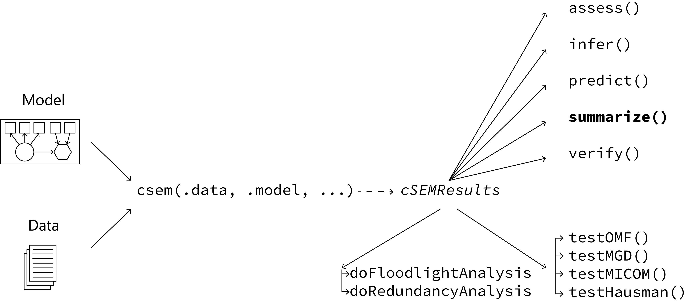

Purpose
Estimate, analyse, test, and study linear, nonlinear, hierachical and multi-group structural equation models using composite-based approaches and procedures, including estimation techniques such as partial least squares path modeling (PLS-PM) and its derivatives (PLSc, OrdPLSc, robustPLSc), generalized structured component analysis (GSCA), generalized structured component analysis with uniqueness terms (GSCAm), generalized canonical correlation analysis (GCCA), principal component analysis (PCA), factor score regression (FSR) using sum score, regression or bartlett scores (including bias correction using Croon’s approach), as well as several tests and typical postestimation procedures (e.g., verify admissibility of the estimates, assess the model fit, test the model fit, compute confidence intervals, compare groups, etc.).
Getting started
The best place to get started is the cSEM-website.
Basic usage
The basic usage is illustrated below.

Usully, using cSEM is the same 3 step procedure:
- Pick a dataset and specify a model using lavaan syntax
- Use
csem()- Apply one of the postestimation functions listed below on the resulting object.
Postestimation functions
There are five major postestimation verbs, four test family functions and two do-family of function:
-
assess(): assess the model using common quality criteria -
infer(): calculate common inferencial quantities (e.g., standard errors, confidence intervals) -
predict(): predict endogenous indicator values -
summarize(): summarize the results -
verify(): verify admissibility of the estimates
Tests are performed by using the test family of functions. Currently the following tests are implemented:
-
testOMF(): performs a test for overall model fit -
testMICOM(): performs a test for composite measurement invariance -
testMGD(): performs several tests to assess multi-group differences -
testHausman(): performs the regression-based Hausman test to test for endogeneity
Other miscellaneous postestimation functions belong do the do-family of functions. Currently two do functions are implemented:
-
doFloodlightAnalysis(): performs a floodlight analysis -
doRedundancyAnalysis(): performs a redundancy analysis
All functions require a cSEMResults object.
Example
Models are defined using lavaan syntax with some slight modifications (see the Specifying a model section on the cSEM-website). For illustration we use the build-in and well-known satisfaction dataset.
require(cSEM)
## Note: The operator "<~" tells cSEM that the construct to its left is modelled
## as a composite.
## The operator "=~" tells cSEM that the construct to its left is modelled
## as a common factor.
## The operator "~" tells cSEM which are the dependent (left-hand side) and
## independent variables (right-hand side).
model <- "
# Structural model
EXPE ~ IMAG
QUAL ~ EXPE
VAL ~ EXPE + QUAL
SAT ~ IMAG + EXPE + QUAL + VAL
LOY ~ IMAG + SAT
# Composite model
IMAG <~ imag1 + imag2 + imag3
EXPE <~ expe1 + expe2 + expe3
QUAL <~ qual1 + qual2 + qual3 + qual4 + qual5
VAL <~ val1 + val2 + val3
# Reflective measurement model
SAT =~ sat1 + sat2 + sat3 + sat4
LOY =~ loy1 + loy2 + loy3 + loy4
"The estimation is conducted using the csem() function.
## ________________________________________________________________________________
## ----------------------------------- Overview -----------------------------------
##
## Estimation was successful.
##
## The result is a list of class cSEMResults with list elements:
##
## - Estimates
## - Information
##
## To get an overview or help type:
##
## - ?cSEMResults
## - str(<object-name>)
## - listviewer::jsondedit(<object-name>, mode = 'view')
##
## If you wish to access the list elements directly type e.g.
##
## - <object-name>$Estimates
##
## Available postestimation commands:
##
## - assess(<object-name>)
## - infer(<object-name)
## - predict(<object-name>)
## - summarize(<object-name>)
## - verify(<object-name>)
## ________________________________________________________________________________This is equal to:
csem(
.data = satisfaction,
.model = model,
.approach_cor_robust = "none",
.approach_nl = "sequential",
.approach_paths = "OLS",
.approach_weights = "PLS-PM",
.conv_criterion = "diff_absolute",
.disattenuate = TRUE,
.dominant_indicators = NULL,
.estimate_structural = TRUE,
.id = NULL,
.iter_max = 100,
.normality = FALSE,
.PLS_approach_cf = "dist_squared_euclid",
.PLS_ignore_structural_model = FALSE,
.PLS_modes = NULL,
.PLS_weight_scheme_inner = "path",
.reliabilities = NULL,
.starting_values = NULL,
.tolerance = 1e-05,
.resample_method = "none",
.resample_method2 = "none",
.R = 499,
.R2 = 199,
.handle_inadmissibles = "drop",
.user_funs = NULL,
.eval_plan = "sequential",
.seed = NULL,
.sign_change_option = "none"
)The result is always a named list of class cSEMResults.
To access list elements use $:
A useful tool to examine a list is the listviewer package. If you are new to cSEM this might be a good way to familiarize yourself with the structure of a cSEMResults object.
Apply postestimation functions:
## ________________________________________________________________________________
## ----------------------------------- Overview -----------------------------------
##
## General information:
## ------------------------
## Estimation status = Ok
## Number of observations = 250
## Weight estimator = PLS-PM
## Inner weighting scheme = path
## Type of indicator correlation = Pearson
## Path model estimator = OLS
## Second order approach = NA
## Type of path model = Linear
## Disattenuated = Yes (PLSc)
##
## Construct details:
## ------------------
## Name Modeled as Order Mode
##
## IMAG Composite First order modeB
## EXPE Composite First order modeB
## QUAL Composite First order modeB
## VAL Composite First order modeB
## SAT Common factor First order modeA
## LOY Common factor First order modeA
##
## ----------------------------------- Estimates ----------------------------------
##
## Estimated path coefficients:
## ============================
## Path Estimate Std. error t-stat. p-value
## EXPE ~ IMAG 0.4714 NA NA NA
## QUAL ~ EXPE 0.8344 NA NA NA
## VAL ~ EXPE 0.0457 NA NA NA
## VAL ~ QUAL 0.7013 NA NA NA
## SAT ~ IMAG 0.2450 NA NA NA
## SAT ~ EXPE -0.0172 NA NA NA
## SAT ~ QUAL 0.2215 NA NA NA
## SAT ~ VAL 0.5270 NA NA NA
## LOY ~ IMAG 0.1819 NA NA NA
## LOY ~ SAT 0.6283 NA NA NA
##
## Estimated loadings:
## ===================
## Loading Estimate Std. error t-stat. p-value
## IMAG =~ imag1 0.6306 NA NA NA
## IMAG =~ imag2 0.9246 NA NA NA
## IMAG =~ imag3 0.9577 NA NA NA
## EXPE =~ expe1 0.7525 NA NA NA
## EXPE =~ expe2 0.9348 NA NA NA
## EXPE =~ expe3 0.7295 NA NA NA
## QUAL =~ qual1 0.7861 NA NA NA
## QUAL =~ qual2 0.9244 NA NA NA
## QUAL =~ qual3 0.7560 NA NA NA
## QUAL =~ qual4 0.7632 NA NA NA
## QUAL =~ qual5 0.7834 NA NA NA
## VAL =~ val1 0.9518 NA NA NA
## VAL =~ val2 0.8056 NA NA NA
## VAL =~ val3 0.6763 NA NA NA
## SAT =~ sat1 0.9243 NA NA NA
## SAT =~ sat2 0.8813 NA NA NA
## SAT =~ sat3 0.7127 NA NA NA
## SAT =~ sat4 0.7756 NA NA NA
## LOY =~ loy1 0.9097 NA NA NA
## LOY =~ loy2 0.5775 NA NA NA
## LOY =~ loy3 0.9043 NA NA NA
## LOY =~ loy4 0.4917 NA NA NA
##
## Estimated weights:
## ==================
## Weights Estimate Std. error t-stat. p-value
## IMAG <~ imag1 0.0156 NA NA NA
## IMAG <~ imag2 0.4473 NA NA NA
## IMAG <~ imag3 0.6020 NA NA NA
## EXPE <~ expe1 0.2946 NA NA NA
## EXPE <~ expe2 0.6473 NA NA NA
## EXPE <~ expe3 0.2374 NA NA NA
## QUAL <~ qual1 0.2370 NA NA NA
## QUAL <~ qual2 0.4712 NA NA NA
## QUAL <~ qual3 0.1831 NA NA NA
## QUAL <~ qual4 0.1037 NA NA NA
## QUAL <~ qual5 0.2049 NA NA NA
## VAL <~ val1 0.7163 NA NA NA
## VAL <~ val2 0.2202 NA NA NA
## VAL <~ val3 0.2082 NA NA NA
## SAT <~ sat1 0.3209 NA NA NA
## SAT <~ sat2 0.3059 NA NA NA
## SAT <~ sat3 0.2474 NA NA NA
## SAT <~ sat4 0.2692 NA NA NA
## LOY <~ loy1 0.3834 NA NA NA
## LOY <~ loy2 0.2434 NA NA NA
## LOY <~ loy3 0.3812 NA NA NA
## LOY <~ loy4 0.2073 NA NA NA
##
## Estimated indicator correlations:
## =================================
## Correlation Estimate Std. error t-stat. p-value
## imag1 ~~ imag2 0.6437 NA NA NA
## imag1 ~~ imag3 0.5433 NA NA NA
## imag2 ~~ imag3 0.7761 NA NA NA
## expe1 ~~ expe2 0.5353 NA NA NA
## expe1 ~~ expe3 0.4694 NA NA NA
## expe2 ~~ expe3 0.5467 NA NA NA
## qual1 ~~ qual2 0.6053 NA NA NA
## qual1 ~~ qual3 0.5406 NA NA NA
## qual1 ~~ qual4 0.5662 NA NA NA
## qual1 ~~ qual5 0.5180 NA NA NA
## qual2 ~~ qual3 0.6187 NA NA NA
## qual2 ~~ qual4 0.6517 NA NA NA
## qual2 ~~ qual5 0.6291 NA NA NA
## qual3 ~~ qual4 0.4752 NA NA NA
## qual3 ~~ qual5 0.5074 NA NA NA
## qual4 ~~ qual5 0.6402 NA NA NA
## val1 ~~ val2 0.6344 NA NA NA
## val1 ~~ val3 0.4602 NA NA NA
## val2 ~~ val3 0.6288 NA NA NA
##
## ------------------------------------ Effects -----------------------------------
##
## Estimated total effects:
## ========================
## Total effect Estimate Std. error t-stat. p-value
## EXPE ~ IMAG 0.4714 NA NA NA
## QUAL ~ IMAG 0.3933 NA NA NA
## QUAL ~ EXPE 0.8344 NA NA NA
## VAL ~ IMAG 0.2974 NA NA NA
## VAL ~ EXPE 0.6309 NA NA NA
## VAL ~ QUAL 0.7013 NA NA NA
## SAT ~ IMAG 0.4807 NA NA NA
## SAT ~ EXPE 0.5001 NA NA NA
## SAT ~ QUAL 0.5911 NA NA NA
## SAT ~ VAL 0.5270 NA NA NA
## LOY ~ IMAG 0.4840 NA NA NA
## LOY ~ EXPE 0.3142 NA NA NA
## LOY ~ QUAL 0.3714 NA NA NA
## LOY ~ VAL 0.3311 NA NA NA
## LOY ~ SAT 0.6283 NA NA NA
##
## Estimated indirect effects:
## ===========================
## Indirect effect Estimate Std. error t-stat. p-value
## QUAL ~ IMAG 0.3933 NA NA NA
## VAL ~ IMAG 0.2974 NA NA NA
## VAL ~ EXPE 0.5852 NA NA NA
## SAT ~ IMAG 0.2357 NA NA NA
## SAT ~ EXPE 0.5173 NA NA NA
## SAT ~ QUAL 0.3696 NA NA NA
## LOY ~ IMAG 0.3020 NA NA NA
## LOY ~ EXPE 0.3142 NA NA NA
## LOY ~ QUAL 0.3714 NA NA NA
## LOY ~ VAL 0.3311 NA NA NA
## ________________________________________________________________________________## ________________________________________________________________________________
##
## Verify admissibility:
##
## admissible
##
## Details:
##
## Code Status Description
## 1 ok Convergence achieved
## 2 ok All absolute standardized loading estimates <= 1
## 3 ok Construct VCV is positive semi-definite
## 4 ok All reliability estimates <= 1
## 5 ok Model-implied indicator VCV is positive semi-definite
## ________________________________________________________________________________## ________________________________________________________________________________
## --------- Test for overall model fit based on Beran & Srivastava (1985) --------
##
## Null hypothesis:
##
## +------------------------------------------------------------+
## | |
## | H0: Population indicator covariance matrix is equal to |
## | model-implied indicator covariance matrix. |
## | |
## +------------------------------------------------------------+
##
## Test statistic and critical value:
##
## Critical value
## Distance measure Test statistic 95%
## dG 0.6493 0.3096
## SRMR 0.0940 0.0515
## dL 2.2340 0.6706
##
##
## Decision:
##
## Significance level
## Distance measure 95%
## dG reject
## SRMR reject
## dL reject
##
## Additonal information:
##
## Out of 499 bootstrap replications 467 are admissible.
## See ?verify() for what constitutes an inadmissible result.
##
## The seed used was: -591838601
## ________________________________________________________________________________## ________________________________________________________________________________
##
## Construct AVE R2 R2_adj
## SAT 0.6851 0.7624 0.7585
## LOY 0.5552 0.5868 0.5834
##
## -------------- Common (internal consistency) reliability estimates -------------
##
## Construct Cronbachs_alpha Joereskogs_rho Dijkstra-Henselers_rho_A
## SAT 0.8940 0.8960 0.9051
## LOY 0.8194 0.8237 0.8761
##
## ----------- Alternative (internal consistency) reliability estimates -----------
##
## Construct RhoC RhoC_mm RhoC_weighted
## SAT 0.8960 0.8938 0.9051
## LOY 0.8237 0.8011 0.8761
##
## Construct RhoC_weighted_mm RhoT RhoT_weighted
## SAT 0.9051 0.8940 0.8869
## LOY 0.8761 0.8194 0.7850
##
## --------------------------- Distance and fit measures --------------------------
##
## Geodesic distance = 0.6493432
## Squared Euclidian distance = 2.23402
## ML distance = 2.921932
##
## Chi_square = 727.5611
## Chi_square_df = 4.181386
## CFI = 0.8573048
## GFI = 0.9642375
## IFI = 0.8593711
## NFI = 0.8229918
## NNFI = 0.8105598
## RMSEA = 0.1130338
## RMS_theta = 0.05069299
## RMS_theta_mi = 0.05069299
## SRMR = 0.09396871
##
## Degrees of freedom = 174
##
## ----------------------- Variance inflation factors (VIFs) ----------------------
##
## Dependent construct: 'VAL'
##
## Independent construct VIF value
## EXPE 3.2928
## QUAL 3.2928
## IMAG 0.0000
## VAL 0.0000
## SAT 0.0000
##
## Dependent construct: 'SAT'
##
## Independent construct VIF value
## EXPE 3.2985
## QUAL 4.4151
## IMAG 1.7280
## VAL 2.6726
## SAT 0.0000
##
## Dependent construct: 'LOY'
##
## Independent construct VIF value
## EXPE 0.0000
## QUAL 0.0000
## IMAG 1.9345
## VAL 0.0000
## SAT 1.9345
##
## -------------------------- Effect sizes (Cohen's f^2) --------------------------
##
## Dependent construct: 'EXPE'
##
## Independent construct f^2
## IMAG 0.2856
##
## Dependent construct: 'QUAL'
##
## Independent construct f^2
## EXPE 2.2928
##
## Dependent construct: 'VAL'
##
## Independent construct f^2
## EXPE 0.0014
## QUAL 0.3301
##
## Dependent construct: 'SAT'
##
## Independent construct f^2
## IMAG 0.1462
## EXPE 0.0004
## QUAL 0.0468
## VAL 0.4373
##
## Dependent construct: 'LOY'
##
## Independent construct f^2
## IMAG 0.0414
## SAT 0.4938
##
## ------------------------------ Validity assessment -----------------------------
##
## Heterotrait-montrait ratio of correlation matrix (HTMT matrix)
##
## SAT LOY
## SAT 0.0000000 0
## LOY 0.7432489 0
##
##
## Fornell-Larcker matrix
##
## SAT LOY
## SAT 0.6851491 0.5696460
## LOY 0.5696460 0.5551718
##
##
## ------------------------------------ Effects -----------------------------------
##
## Estimated total effects:
## ========================
## Total effect Estimate Std. error t-stat. p-value
## EXPE ~ IMAG 0.4714 NA NA NA
## QUAL ~ IMAG 0.3933 NA NA NA
## QUAL ~ EXPE 0.8344 NA NA NA
## VAL ~ IMAG 0.2974 NA NA NA
## VAL ~ EXPE 0.6309 NA NA NA
## VAL ~ QUAL 0.7013 NA NA NA
## SAT ~ IMAG 0.4807 NA NA NA
## SAT ~ EXPE 0.5001 NA NA NA
## SAT ~ QUAL 0.5911 NA NA NA
## SAT ~ VAL 0.5270 NA NA NA
## LOY ~ IMAG 0.4840 NA NA NA
## LOY ~ EXPE 0.3142 NA NA NA
## LOY ~ QUAL 0.3714 NA NA NA
## LOY ~ VAL 0.3311 NA NA NA
## LOY ~ SAT 0.6283 NA NA NA
##
## Estimated indirect effects:
## ===========================
## Indirect effect Estimate Std. error t-stat. p-value
## QUAL ~ IMAG 0.3933 NA NA NA
## VAL ~ IMAG 0.2974 NA NA NA
## VAL ~ EXPE 0.5852 NA NA NA
## SAT ~ IMAG 0.2357 NA NA NA
## SAT ~ EXPE 0.5173 NA NA NA
## SAT ~ QUAL 0.3696 NA NA NA
## LOY ~ IMAG 0.3020 NA NA NA
## LOY ~ EXPE 0.3142 NA NA NA
## LOY ~ QUAL 0.3714 NA NA NA
## LOY ~ VAL 0.3311 NA NA NA
##
## ------------------------- Variance accounted for (VAF) -------------------------
##
##
## Effects Estimate Std. error t-stat. p-value
## QUAL ~ IMAG 1.0000 NA NA NA
## VAL ~ IMAG 1.0000 NA NA NA
## VAL ~ EXPE 0.9275 NA NA NA
## SAT ~ IMAG 0.4904 NA NA NA
## SAT ~ EXPE 1.0345 NA NA NA
## SAT ~ QUAL 0.6252 NA NA NA
## LOY ~ IMAG 0.6241 NA NA NA
## LOY ~ EXPE 1.0000 NA NA NA
## LOY ~ QUAL 1.0000 NA NA NA
## LOY ~ VAL 1.0000 NA NA NA
## ________________________________________________________________________________## ________________________________________________________________________________
## ----------------------------------- Overview -----------------------------------
##
## Number of obs. training = 225
## Number of obs. test = 25
## Number of cv folds = 10
## Number of repetitions = 10
## Handle inadmissibles = stop
## Target = 'PLS-PM'
## Benchmark = 'lm'
##
## ------------------------------ Prediction metrics ------------------------------
##
##
## Name MAE target MAE benchmark RMSE target RMSE benchmark Q2_predict
## expe1 1.4538 1.5655 1.9059 2.0942 0.0553
## expe2 1.4135 1.4773 1.9345 2.0276 0.1990
## expe3 1.6316 1.7238 2.1245 2.2187 0.1252
## qual1 1.4759 1.5466 1.9289 2.0627 0.1159
## qual2 1.5771 1.5354 2.0375 2.0582 0.2183
## qual3 1.7297 1.7232 2.2193 2.2758 0.1205
## qual4 1.2338 1.1962 1.5952 1.6276 0.2346
## qual5 1.5037 1.4987 1.9314 1.9524 0.1979
## val1 1.4436 1.3644 1.8664 1.7681 0.2515
## val2 1.2271 1.2049 1.6479 1.7147 0.1736
## val3 1.4810 1.3828 1.9680 1.9386 0.1485
## sat1 1.2451 1.2310 1.6426 1.6170 0.3415
## sat2 1.2303 1.1949 1.6379 1.6253 0.3099
## sat3 1.3402 1.2754 1.6719 1.7207 0.2105
## sat4 1.3161 1.2610 1.6653 1.6335 0.2779
## loy1 1.6887 1.6572 2.2317 2.2250 0.2699
## loy2 1.4864 1.4713 1.9136 1.9788 0.1320
## loy3 1.7024 1.6686 2.2803 2.2714 0.2717
## loy4 1.6875 1.6691 2.1753 2.3013 0.0875
## ________________________________________________________________________________Resampling and Inference
By default no inferential quantities are calculated since most composite-based estimators have no closed-form expressions for standard errors. Resampling is used instead. cSEM mostly relies on the bootstrap procedure (although jackknife is implemented as well) to estimate standard errors, test statistics, and critical quantiles.
cSEM offers two ways to compute resamples:
- Setting
.resample_methodincsem()to"jackkinfe"or"bootstrap"and subsequently using postestimation functionssummarize()orinfer(). - The same result is achieved by passing a
cSEMResultsobject toresamplecSEMResults()and subsequently using postestimation functionssummarize()orinfer().
# Setting `.resample_method`
b1 <- csem(.data = satisfaction, .model = model, .resample_method = "bootstrap")
# Using resamplecSEMResults()
b2 <- resamplecSEMResults(res)Now summarize() shows inferencial quantities as well:
## ________________________________________________________________________________
## ----------------------------------- Overview -----------------------------------
##
## General information:
## ------------------------
## Estimation status = Ok
## Number of observations = 250
## Weight estimator = PLS-PM
## Inner weighting scheme = path
## Type of indicator correlation = Pearson
## Path model estimator = OLS
## Second order approach = NA
## Type of path model = Linear
## Disattenuated = Yes (PLSc)
##
## Resample information:
## ---------------------
## Resample methode = bootstrap
## Number of resamples = 499
## Number of admissible results = 488
## Approach to handle inadmissibles = drop
## Sign change option = none
## Random seed = -203139034
##
## Construct details:
## ------------------
## Name Modeled as Order Mode
##
## IMAG Composite First order modeB
## EXPE Composite First order modeB
## QUAL Composite First order modeB
## VAL Composite First order modeB
## SAT Common factor First order modeA
## LOY Common factor First order modeA
##
## ----------------------------------- Estimates ----------------------------------
##
## Estimated path coefficients:
## ============================
## CI_percentile
## Path Estimate Std. error t-stat. p-value 95%
## EXPE ~ IMAG 0.4714 0.0623 7.5618 0.0000 [ 0.3445; 0.5994 ]
## QUAL ~ EXPE 0.8344 0.0240 34.7069 0.0000 [ 0.7791; 0.8758 ]
## VAL ~ EXPE 0.0457 0.0855 0.5344 0.5931 [-0.1048; 0.2439 ]
## VAL ~ QUAL 0.7013 0.0802 8.7475 0.0000 [ 0.5319; 0.8533 ]
## SAT ~ IMAG 0.2450 0.0562 4.3594 0.0000 [ 0.1419; 0.3561 ]
## SAT ~ EXPE -0.0172 0.0738 -0.2335 0.8154 [-0.1735; 0.1314 ]
## SAT ~ QUAL 0.2215 0.1017 2.1778 0.0294 [ 0.0384; 0.4433 ]
## SAT ~ VAL 0.5270 0.0873 6.0396 0.0000 [ 0.3550; 0.6864 ]
## LOY ~ IMAG 0.1819 0.0836 2.1771 0.0295 [ 0.0271; 0.3506 ]
## LOY ~ SAT 0.6283 0.0849 7.4044 0.0000 [ 0.4584; 0.7860 ]
##
## Estimated loadings:
## ===================
## CI_percentile
## Loading Estimate Std. error t-stat. p-value 95%
## IMAG =~ imag1 0.6306 0.0994 6.3411 0.0000 [ 0.4211; 0.8094 ]
## IMAG =~ imag2 0.9246 0.0414 22.3325 0.0000 [ 0.8196; 0.9790 ]
## IMAG =~ imag3 0.9577 0.0292 32.8056 0.0000 [ 0.8767; 0.9914 ]
## EXPE =~ expe1 0.7525 0.0741 10.1509 0.0000 [ 0.5878; 0.8731 ]
## EXPE =~ expe2 0.9348 0.0273 34.2106 0.0000 [ 0.8645; 0.9717 ]
## EXPE =~ expe3 0.7295 0.0703 10.3789 0.0000 [ 0.5662; 0.8450 ]
## QUAL =~ qual1 0.7861 0.0651 12.0684 0.0000 [ 0.6343; 0.8912 ]
## QUAL =~ qual2 0.9244 0.0218 42.3360 0.0000 [ 0.8715; 0.9586 ]
## QUAL =~ qual3 0.7560 0.0607 12.4475 0.0000 [ 0.6170; 0.8581 ]
## QUAL =~ qual4 0.7632 0.0521 14.6619 0.0000 [ 0.6602; 0.8601 ]
## QUAL =~ qual5 0.7834 0.0494 15.8704 0.0000 [ 0.6727; 0.8601 ]
## VAL =~ val1 0.9518 0.0234 40.6265 0.0000 [ 0.8946; 0.9859 ]
## VAL =~ val2 0.8056 0.0632 12.7504 0.0000 [ 0.6630; 0.9056 ]
## VAL =~ val3 0.6763 0.0718 9.4172 0.0000 [ 0.5304; 0.7997 ]
## SAT =~ sat1 0.9243 0.0213 43.3554 0.0000 [ 0.8748; 0.9580 ]
## SAT =~ sat2 0.8813 0.0290 30.3935 0.0000 [ 0.8157; 0.9263 ]
## SAT =~ sat3 0.7127 0.0548 13.0103 0.0000 [ 0.5804; 0.7997 ]
## SAT =~ sat4 0.7756 0.0489 15.8571 0.0000 [ 0.6750; 0.8603 ]
## LOY =~ loy1 0.9097 0.0522 17.4363 0.0000 [ 0.7741; 0.9895 ]
## LOY =~ loy2 0.5775 0.0862 6.7032 0.0000 [ 0.3721; 0.7298 ]
## LOY =~ loy3 0.9043 0.0451 20.0304 0.0000 [ 0.8086; 0.9817 ]
## LOY =~ loy4 0.4917 0.1043 4.7151 0.0000 [ 0.2853; 0.7044 ]
##
## Estimated weights:
## ==================
## CI_percentile
## Weights Estimate Std. error t-stat. p-value 95%
## IMAG <~ imag1 0.0156 0.1222 0.1280 0.8982 [-0.2175; 0.2590 ]
## IMAG <~ imag2 0.4473 0.1522 2.9379 0.0033 [ 0.1197; 0.7351 ]
## IMAG <~ imag3 0.6020 0.1410 4.2701 0.0000 [ 0.3143; 0.8465 ]
## EXPE <~ expe1 0.2946 0.1131 2.6049 0.0092 [ 0.0686; 0.5128 ]
## EXPE <~ expe2 0.6473 0.0858 7.5464 0.0000 [ 0.4546; 0.7875 ]
## EXPE <~ expe3 0.2374 0.0915 2.5930 0.0095 [ 0.0512; 0.4391 ]
## QUAL <~ qual1 0.2370 0.0854 2.7757 0.0055 [ 0.0930; 0.4238 ]
## QUAL <~ qual2 0.4712 0.0799 5.9001 0.0000 [ 0.2943; 0.6113 ]
## QUAL <~ qual3 0.1831 0.0782 2.3398 0.0193 [ 0.0262; 0.3330 ]
## QUAL <~ qual4 0.1037 0.0586 1.7711 0.0765 [-0.0081; 0.2261 ]
## QUAL <~ qual5 0.2049 0.0628 3.2622 0.0011 [ 0.0842; 0.3117 ]
## VAL <~ val1 0.7163 0.0963 7.4366 0.0000 [ 0.5167; 0.8751 ]
## VAL <~ val2 0.2202 0.0946 2.3268 0.0200 [ 0.0516; 0.4213 ]
## VAL <~ val3 0.2082 0.0580 3.5884 0.0003 [ 0.0857; 0.3119 ]
## SAT <~ sat1 0.3209 0.0154 20.7924 0.0000 [ 0.2962; 0.3554 ]
## SAT <~ sat2 0.3059 0.0139 22.0028 0.0000 [ 0.2817; 0.3383 ]
## SAT <~ sat3 0.2474 0.0113 21.8203 0.0000 [ 0.2209; 0.2661 ]
## SAT <~ sat4 0.2692 0.0120 22.5203 0.0000 [ 0.2486; 0.2942 ]
## LOY <~ loy1 0.3834 0.0272 14.1010 0.0000 [ 0.3309; 0.4369 ]
## LOY <~ loy2 0.2434 0.0305 7.9942 0.0000 [ 0.1744; 0.2964 ]
## LOY <~ loy3 0.3812 0.0299 12.7460 0.0000 [ 0.3298; 0.4413 ]
## LOY <~ loy4 0.2073 0.0376 5.5195 0.0000 [ 0.1315; 0.2758 ]
##
## Estimated indicator correlations:
## =================================
## CI_percentile
## Correlation Estimate Std. error t-stat. p-value 95%
## imag1 ~~ imag2 0.6437 0.0659 9.7716 0.0000 [ 0.5181; 0.7631 ]
## imag1 ~~ imag3 0.5433 0.0700 7.7579 0.0000 [ 0.4127; 0.6744 ]
## imag2 ~~ imag3 0.7761 0.0391 19.8478 0.0000 [ 0.6865; 0.8451 ]
## expe1 ~~ expe2 0.5353 0.0586 9.1358 0.0000 [ 0.4211; 0.6582 ]
## expe1 ~~ expe3 0.4694 0.0611 7.6870 0.0000 [ 0.3559; 0.5848 ]
## expe2 ~~ expe3 0.5467 0.0586 9.3357 0.0000 [ 0.4272; 0.6589 ]
## qual1 ~~ qual2 0.6053 0.0567 10.6824 0.0000 [ 0.4907; 0.7177 ]
## qual1 ~~ qual3 0.5406 0.0594 9.0969 0.0000 [ 0.4274; 0.6528 ]
## qual1 ~~ qual4 0.5662 0.0667 8.4865 0.0000 [ 0.4331; 0.6853 ]
## qual1 ~~ qual5 0.5180 0.0697 7.4311 0.0000 [ 0.3753; 0.6442 ]
## qual2 ~~ qual3 0.6187 0.0560 11.0425 0.0000 [ 0.4948; 0.7075 ]
## qual2 ~~ qual4 0.6517 0.0579 11.2566 0.0000 [ 0.5333; 0.7612 ]
## qual2 ~~ qual5 0.6291 0.0585 10.7478 0.0000 [ 0.4996; 0.7296 ]
## qual3 ~~ qual4 0.4752 0.0659 7.2102 0.0000 [ 0.3402; 0.6019 ]
## qual3 ~~ qual5 0.5074 0.0638 7.9566 0.0000 [ 0.3833; 0.6303 ]
## qual4 ~~ qual5 0.6402 0.0550 11.6354 0.0000 [ 0.5307; 0.7326 ]
## val1 ~~ val2 0.6344 0.0527 12.0379 0.0000 [ 0.5255; 0.7312 ]
## val1 ~~ val3 0.4602 0.0711 6.4750 0.0000 [ 0.3203; 0.6014 ]
## val2 ~~ val3 0.6288 0.0634 9.9212 0.0000 [ 0.4889; 0.7371 ]
##
## ------------------------------------ Effects -----------------------------------
##
## Estimated total effects:
## ========================
## CI_percentile
## Total effect Estimate Std. error t-stat. p-value 95%
## EXPE ~ IMAG 0.4714 0.0623 7.5618 0.0000 [ 0.3445; 0.5994 ]
## QUAL ~ IMAG 0.3933 0.0583 6.7447 0.0000 [ 0.2733; 0.5132 ]
## QUAL ~ EXPE 0.8344 0.0240 34.7069 0.0000 [ 0.7791; 0.8758 ]
## VAL ~ IMAG 0.2974 0.0586 5.0727 0.0000 [ 0.1937; 0.4264 ]
## VAL ~ EXPE 0.6309 0.0502 12.5711 0.0000 [ 0.5396; 0.7290 ]
## VAL ~ QUAL 0.7013 0.0802 8.7475 0.0000 [ 0.5319; 0.8533 ]
## SAT ~ IMAG 0.4807 0.0655 7.3418 0.0000 [ 0.3553; 0.6067 ]
## SAT ~ EXPE 0.5001 0.0568 8.8103 0.0000 [ 0.4060; 0.6163 ]
## SAT ~ QUAL 0.5911 0.0931 6.3472 0.0000 [ 0.4073; 0.7701 ]
## SAT ~ VAL 0.5270 0.0873 6.0396 0.0000 [ 0.3550; 0.6864 ]
## LOY ~ IMAG 0.4840 0.0687 7.0450 0.0000 [ 0.3532; 0.6233 ]
## LOY ~ EXPE 0.3142 0.0545 5.7607 0.0000 [ 0.2142; 0.4269 ]
## LOY ~ QUAL 0.3714 0.0850 4.3703 0.0000 [ 0.2156; 0.5477 ]
## LOY ~ VAL 0.3311 0.0775 4.2709 0.0000 [ 0.1962; 0.4977 ]
## LOY ~ SAT 0.6283 0.0849 7.4044 0.0000 [ 0.4584; 0.7860 ]
##
## Estimated indirect effects:
## ===========================
## CI_percentile
## Indirect effect Estimate Std. error t-stat. p-value 95%
## QUAL ~ IMAG 0.3933 0.0583 6.7447 0.0000 [ 0.2733; 0.5132 ]
## VAL ~ IMAG 0.2974 0.0586 5.0727 0.0000 [ 0.1937; 0.4264 ]
## VAL ~ EXPE 0.5852 0.0686 8.5281 0.0000 [ 0.4362; 0.7163 ]
## SAT ~ IMAG 0.2357 0.0472 4.9918 0.0000 [ 0.1641; 0.3433 ]
## SAT ~ EXPE 0.5173 0.0683 7.5690 0.0000 [ 0.3920; 0.6627 ]
## SAT ~ QUAL 0.3696 0.0612 6.0366 0.0000 [ 0.2535; 0.4836 ]
## LOY ~ IMAG 0.3020 0.0542 5.5769 0.0000 [ 0.2029; 0.4096 ]
## LOY ~ EXPE 0.3142 0.0545 5.7607 0.0000 [ 0.2142; 0.4269 ]
## LOY ~ QUAL 0.3714 0.0850 4.3703 0.0000 [ 0.2156; 0.5477 ]
## LOY ~ VAL 0.3311 0.0775 4.2709 0.0000 [ 0.1962; 0.4977 ]
## ________________________________________________________________________________Several resample-based confidence intervals are implemented, see ?infer():
Both bootstrap and jackknife resampling support platform-independent multiprocessing as well as setting random seeds via the future framework. For multiprocessing simply set .eval_plan = "multiprocess" in which case the maximum number of available cores is used if not on Windows. On Windows as many separate R instances are opened in the backround as there are cores available instead. Note that this naturally has some overhead so for a small number of resamples multiprocessing will not always be faster compared to sequential (single core) processing (the default). Seeds are set via the .seed argument.